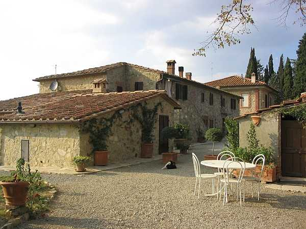

Quercegrossa (Ricordi e memorie)
CAPITOLO I - LUOGHI E PODERI
(PODERINO)
Cliccami per ritornare all'Indice poderi
Vai all'Indice dei Capitoli
PODERINO

Frugando tra le carte dell’Archivio diocesano nei primi tempi di questa ricerca mi saltò agli occhi un nome mai udito prima: "Bello Stento"; e leggere che questi era stato un podere della Parrocchia di Quercegrossa mi incuriosì non poco e accelerai l’esame della documentazione per saperne di più, tanto che, dopo ulteriore inchiesta a Quercegrossa, nessuno rammentava questo toponimo. Allora ne ricostruii le vicende e ... arrivai al Poderino. Nell’inventario del 1716 don Lucchi, curato di Quercegrossa, accennava alla proprietà di un piccolo pezzo di terra senza nome: "Un pezzo di terra di stara diciotto di là dal Selvolino; da una banda (confina) il Nobil Signor Antonio Falconetti col terreno e le pasture della Foresta e dall’altra Arcangelo Pasquini con le pasture delle Gallozzole, da capo la via che dalle Gallozzole va alla Pieve di San Leonino". Venticinque anni dopo, nell’inventario dei beni fatto dal rettore Picconi nel 1741 così si legge: "Altro pezzo di terra lavorativo a parte vitato a parte sodivo di stara circa diciotto (2,2 ettari) principiato dal fu Sig. Antonio Lucchi rettore stato di detta Chiesa anticamente chiamato il Selvolino più per essere terra molto sterile viene communemente chiamato Bello Stento con una piccola casa per il lavoratore consistente in una stanza e stalla e poco distante un piccolo forno mezzo rovinato, confina da una il Sig. Angelo Falconetti colle pasture del Podere della Foresta da capo la via che conduce a San Leonino in Conio, e dall’altra Arcangelo Pasquini delle Gallozzole". Quindi, durante il suo rettorato sono costruite da don Lucchi, sul detto pezzo di terra, una piccola casa con stanza e stalla e, separato, un piccolo forno il quale essendo già "mezzo rovinato" la dice lunga sulla qualità del lavoro eseguito. Un podere dunque di proprietà della parrocchia che ha un suo contadino che fornisce una piccola rendita e situato a Nord delle Gallozzole. La data di costruzione si può fissare fra il 1720 e il 1730, e il podere prende il nome dal luogo dove sorge. Alcuni anni dopo don Picconi nel descrivere il beneficio parrocchiale lo indica come "Un poderino con casa per il lavoratore…". Trascorre il secolo senza novità e solo con don Bianciardi nel 1801 si hanno delle modifiche al modesto fabbricato. Egli accresce il podere di Bellostento di due stalle, una per i bovi e l’altra per le pecore, fino allora mancanti. Ma un decennio dopo, il 13 dicembre 1813, improvvisamente, don Bianciardi vende il podere al sig. Fortini e dalla di lui figlia Maria ne Borghesi passa al nobile Giuseppe Fondi il 5 maggio 1821. Dai Fondi a Ferdinando Manetti il 31 dicembre 1823 in un affare che investe anche i poderi di Petroio e delle Redi. Nel Catasto leopoldino del 1825 il nome è ancora di Bello Stento e la proprietà fino al 1842 segue quella di Petroio con i Bacci, i Nardi e i Guarnieri poi la cessione che segnò la svolta per il misero podere e ciò avvenne per merito del proposto di San Leonino, don Giuseppe Rivi che acquistò lo stabile il 18 luglio 1843 da Cosimo Guarnieri. Il suddetto Preposto intese subito accrescere la produttività e la rendita del podere aumentandone la capacità per ospitare una famiglia contadina e una o due di pigionali con importanti lavori di ampliamento nella parte Sud. Il ritrovamento di una targa con scritta "Casa nuova 1843" rinvenuta là dove c’era il tinaio, testimonia della volontà innovativa del preposto che diede subito inizio a lavori di ristrutturazione che in circa venti anni lo portarono a investire abbondantemente in questa fabbrica, dandogli così l’aspetto attuale. Infatti, si hanno notizie di ulteriori interventi nel 1859 e nel 1861 con rifondazione del forno, che però reca la data del 1840, e aggiunta di altri ambienti ad uso colonico.
L'antico forno, restaurato e funzionante, risalente al 1840
Nel 1849, prima dei lavori, vi risiedeva una sola famiglia colonica, in seguito vi saranno due e anche tre nuclei familiari residenti. Tra le prime cose che fece il preposto Rivi ci fu quella di cambiare nome al podere che per un trentennio viene definito "Poder nuovo" come dalla detta targa e dai documenti. La nuova espressione però non riesce ad imporsi perché nel 1878 il podere è ancora chiamato Bello Stento, anzi Bellostento, ma assistiamo l’anno successivo all’apparizione documentaria per la prima volta del nome "Poderino", nome che da quella data sostituirà definitivamente il vecchio sui registri parrocchiali, ma ancora nel 1912 il nome di Bellostento è usato per indicare il Poderino nei registri del comune di Monteriggioni.
Alla morte del reverendo Rivi tutte le proprietà passano il 3 gennaio 1861 a un suo parente, Natale Rivi, e Benedetto che l’assisteva a S. Leonino sarà il legittimario. Natale compie gli ultimi lavori prima di rivenderlo tre anni dopo ai Favilli.
E’ interessante seguire per intero la complessa attribuzione di quote ai vari membri familiari, secondo la relazione di parentela, nei diversi passaggi di proprietà nell’ambito della detta famiglia e dei Barucci, attuali proprietari, che gli subentrarono nel 1888:
Il 4 febbraio 1864 passa per compravendita a Favilli Pietro, Giovacchino e Giuseppe di Bernardino per 3/4, a Giulia e Bernardino di Vincenzo per 1/4. Palmira, Maria e Caterina di detto Vincenzo sono legittimarie di un quarto.
Il 18 maggio 1884 passa per vendita e cessione a Favilli Pietro e Giuseppe fu Bernardino per 1/2, Cambi Vittoria fu Luigi moglie di Favilli Giuseppe per 1/4, Favilli Giulio e Bernardino di Vincenzo per 1/4, e Palmira, Maria e Caterina di detto Vincenzo legittimarie per questo quarto.
Il 10 gennaio 1888 passa per compravendita a Barucci Lodovico e Lorenzo, fratelli fu Simone, proprietari, e Favilli Maria di Vincenzo legittimaria in parte.
Il 15 maggio 1895 per successione, muore Favilli Maria e sono proprietari Barucci Lodovico e Lorenzo, Pepil Giuseppe e Narciso di Giulio legittimari e Pepil Giulio usufruttuario ¼.
Il 3 agosto 1895 sono proprietari Barucci Lodovico e Lorenzo per cessione (i Pepil cedono tutti i diritti con l’atto di cessione del 28 giugno 1895 rogato dal notaio Socci a Siena il 4 luglio).
Il 30 settembre 1903 successione testamentaria per la morte di Lorenzo avvenuta il 18 aprile 1903. Le case sono invariate mentre nasce un bosco. I proprietari sono: Lodovico per 1/2, Giovanni fu Simone e Barucci Pietro di Giovanni per l’altro mezzo. Usufruttuarie Boddi Adele fu Pietro vedova Barucci e Barucci Lodovico fu Simone in parti uguali.
Il 20 febbraio 1907 (morte di Lodovico il 12 agosto 1906) sono proprietari Giovanni fu Simone per 4/6 e Barucci Pietro di Giovanni per 2/6. Boddi Adele fu Pietro vedova Barucci e Barucci Lodovico fu Simone usufruttuari in parte.
Il 6 giugno 1907 per riunione di usufrutto sono proprietari Giovanni di Simone per 2/3 e Pietro di Giovanni per 1/3. Boddi Adele è usufruttuaria in parte.
Muore Giovanni Barucci il 20 luglio 1920 e la proprietà passa a Barucci Pietro, Elvira e Vittoria fu Giovanni per 2/3 e Barucci Pietro di Giovanni per 1/3. Boddi Adele e usufruttuaria in parte.
L’11 ottobre 1922 (compare una parte nuova) e sono proprietari Barucci Pietro e Elvira fu Giovanni per 2/3 e Pietro di Giovanni per 1/3. Boddi Adele fu Pietro vedova Barucci usufruttuaria in parte.
Il 31 marzo 1923 Barucci Pietro è proprietario per l’intero (liquida la sorella). Il 19 luglio 1915 è morta Boddi Adele e dopo 8 anni viene fatta la riunione d’usufrutto.
L’8 marzo 1943 successione a Barucci Pietro di Giovanni: ereditano Rutilio, Lodovico, Marianna e Amelia del fu Pietro.
Nella stessa data per cessione di diritto la proprietà passa a Barucci Rutilio e Lodovico:
la 702 passa a Lodovico; la 309 Casa, a tutti e due; la 308, capanna a Rutilio.
Parte di Lodovico: il 13 novembre 1943 Lodovico vende la sua parte a Lolini Attilio fu Vittorio, a Guido di Girolamo Lolini, a Muzzi Marzino e Fontana Giotto di Giuseppe.
Nel 1949 la parte di Attilio e Guido Lolini va a Marzino Muzzi di Olinto.
Infine il 9 settembre del 1949 Cianti Parisina maritata Regoli acquisisce l’intera proprietà dell’eredita di Lodovico, ormai stabilitosi a Quercegrossa (negli ultimi due passi non appare più il nome di Fontana Giotto).
Parte di Rutilio : il 2 maggio 1947 per successione a Rutilio Barucci la sua parte va a Gino Barucci. Nel 1947 risultano Barucci Gino, Lina in Vanni, Giovanni e Clara fratelli e sorelle di Rutilio, proprietari. Oggi, Elena Barucci figlia di Gino è l’unica padrona.
Sintetizzando le vicende del Poderino dal 1888 vediamo che da quell’anno i Barucci vi risiedono interrottamente, accanto a una famiglia di coloni o pigionali. La vendita del 1943 divide il Poderino in due e da allora vi sarà un secondo proprietario, estraneo ai Barucci, i Regoli, che sistemeranno la loro villa e vi edificheranno l’oratorio dedicato a S. Anna (vedi Storia Religiosa).
La proprietà Barucci comprende un edificio su due piani a pianta rettangolare con abitazione padronale alla quale si accede con scala esterna adiacente al fabbricato e al pianterreno l’abitazione del pigionale. Un tempo le residenze erano invertite. Gli annessi agricoli sono incorporati o staccati dalla struttura centrale. Fabbricata con pietre irregolari e cotto, l’intera costruzione subì una scialbatura nel dopoguerra in tinta vinaccia, che ben presto però cadde ridando al podere l’aspetto originale.
Situato in Comune di Monteriggioni, a Nord delle Gallozzole e della Casanuova con cui confinano i suoi campi, il Poderino si raggiunge percorrendo la strada regionale per Castellina. Dopo Quercegrossa, passato il Mulino di circa un chilometro, si imbocca il bivio sulla sinistra da dove una diritta strada sterrata, che scende al borro e risale con stretti tornanti, ci porta sul poggetto dove si trova il Poderino. Altra strada tra campi e boschi collegava con le Gallozzole. "La vecchia strada che conduce al poderino è detta Reale". L’amenità del luogo e l’antica aridità delle sue terre si riassumevano nel nome di Bello Stento.
Il podere che i Barucci lavoravano con l’ausilio del contadino o del pigionale si estendeva per ca. dodici ettari con tanta vigna e produzione di olio e grano. La stalla più pecore e capre e anche un cavallo.
Tra primi coloni o pigionali che vi abitarono con piccoli nuclei familiari di tre/sei persone si rammentano Silvestro Vanni nel 1741, i Turchi, i Gabbrielli dall’Ottocento, Agostino Bernardoni, Bernini, Melani e dal 1837 al 1840 è documentata la famiglia Della Scala, cinque componenti col capo famiglia Lorenzo che "lavora piccolo e sterile podere". Poi Borghi, Bruni, Lorenzetti, Panciatici, Testi, Scarpini, Milanesi e Serafino Landi che apre il Novecento. Agli inizi di questo secolo il Bernini (operante), il Paolini (camporaiolo) e l’importante presenza dei Candiani ai quali seguono i Grassi e poi, ultimi mezzaioli, i Tatini: "Erano mezzadri, ma gli ultimi tempi facevano poco".
Il Poderino visto da sud, con la piscina, ad uso dei clienti del residence, che con naturalezza si accosta alle antiche muraglie e ai loro colori
Veduta della facciata esposta a est con gli ingressi padronale e pigionale.
|